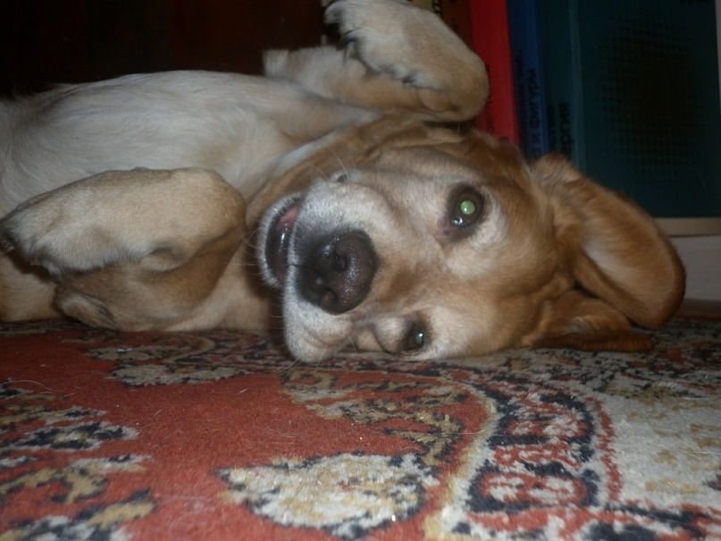
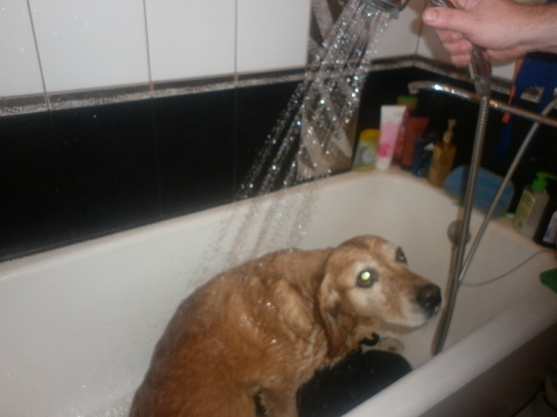

Большие собаки |
Средние собаки |
Маленькие собаки |
Чем разительно отличаются самые большие породы собак от своих меньших по габаритам тела сородичей? Вес. Чтобы попасть в список самых крупных следует иметь вес не менее 45 кг. Рост. Как и лошади, собаки всегда измеряются в холке, которая является самой высокой точкой их плеч. Грозная внешность. Уже сами габариты животного способны вселить человеку страх. Визуально, пышная шерсть «увеличивает» собаку, но и особи с короткой шерстью, которая подчеркивает структуру мышц тела, а еще маленькими глазами, купированными ушами и/или хвостом вселяют в людей не меньший страх. Стоический характер. Многие из крупнейших пород выводились с целью стать охранником и защитником стад, своего хозяина, членов семьи и имущества, и многие из представленных пород обладают сильным, но спокойным, уравновешенным характером. Слюнявые поцелуи. Немалая часть из представленных пород происходит от мастифа - одной из первых типов собак с отвисшими, слюнявыми губами. Если вы являетесь хозяином крупной собачки, то наверняка вам знакомо ощущение массивного, мокрого языка на своём лице, и вы хорошо знаете, что значит быть встреченным ею по возвращению домой. |
Собаки средних пород очень популярны не только у заводчиков, они пользуются большим спросом у охотников, и просто владельцев. Такие собаки легко приспосабливаются к жизни как в квартире, так и на улице (в будке или вольере). Средние собаки имеют ряд преимуществ перед своими сородичами более крупных или же наоборот, более мелких пород. Такая собака не займет много места в квартире, а на улице не будет наводить страх на прохожих. С собаками среднего размера без страха можно оставить детей, для них они будут не только другом, но и защитником, нянькой. Во время игры с ребенком, собака вряд ли опрокинет малыша, а ребенок в свою очередь не сможет причинить вред питомцу (в отличие от карликовых собачек). К средним собакам можно отнести следующие породы: лайки, Бассет-хаунд, чау-чау и многие другие. Среди собак среднего размера очень много встречается охотничьих собак. У охотников они пользуются большой славой. Они выносливы, подвижны, малогабаритны, но сильны. У владельцев средних собак не возник проблем с амуницией, мисками, подстилками и проч, поскольку они всегда в наличии во всех зоомагазинах. Еще одним плюсом содержания собак средних пород является пропитание, в отличие от больших собак, эти собаки едят намного меньше. |
Маленькие собачки, высота в холке которых 15-30 см, в некоторых классификациях называются комнатными, декоративными или той-собаками. В эту группу также попадают и некоторые терьеры. Все эти собаки считаются самыми миниатюрными представителями собачьего мира. Размеры собак позволяют им хорошо жить, как в просторном доме, так и в небольшой квартире. Маленькие собаки имеют небольшой вес, поэтому они могут повсюду сопровождать своих хозяев, сидя у них на руках или в сумке. Также благодаря небольшим размерам, собачкам не требуются длительные прогулки на поводке, они легко приучаются ходить в туалет в лоток. Некоторые из них обладают прекрасным экстерьером, а некоторые – великолепными рабочими качествами. Маленькие собаки, как правило, дружелюбные, общительные и умные, но требуют много внимания. Размеры этих собачек – их главная привлекательная черта, но не единственная! |
сладко спим

почеши пузико
дурачимся

не люблю мыться
поймал рака
на ручках